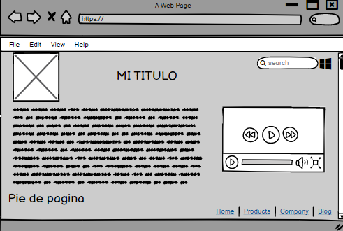

Flex Box Y Css Grid
Flex Box es uno de los nuevos valores HTML5 para propiedad CSS display,
ya que este nos permite maquetar nuestras páginas web de una manera mucho más
fácil de lo que se hacía con la forma tradicional, en la que utilizábamos
propiedades como float o position. Flexbox se creó para diseños
de una dimensión, en una columna o una fila
CSS Grid contiene funciones de diseño dirigidas a los desarrolladores
de las aplicaciones web. El CSS grid tambien se puede utilizar para lograr muchos mas diseños
diferentes. También se destaca por permitir dividir una página en áreas o regiones
principales, por definir la relación en términos de tamaño, posición y capas entre
partes de un control construido a partir de primitivas HTML.
Referencias
https://developer.mozilla.org/es/docs/Web/CSS/CSS_Grid_Layouthttps://openwebinars.net/blog/que-es-flexbox/ 